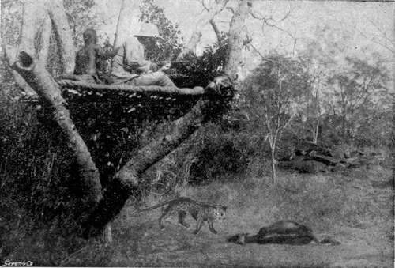

Leopards. Continued
Description
This section is from the book "Sport In The Low-Country Of Ceylon", by Alfred Clark. Also available from Amazon: Sport in the Low-Country of Ceylon.
Leopards. Continued
Monkeys are such noisy creatures that they are easily found out by their spotted enemy. When a leopard appears under a tree in which monkeys are, there is the wildest excitement. The old males climb to the topmost branches and bellow and bark furiously, whilst the females and young ones spring frantically about. Meanwhile, the leopard darts about underneath, every now and then springing up against, or into the tree. Before long some monkey, mad with terror, misses a leap and falls, or losing its head, drops to the ground with the intention of making for another tree and is instantly caught and killed.
The harsh grating roar which a leopard gives with its muzzle to the ground when on the prowl is no doubt intended to attract the attention of the deer in the neighbourhood. As soon as the frightened creatures begin to bell in response to the roaring their enemy turns off in their direction guided by the sound. It continues to roar till close to them when it will suddenly stop and begin with rapid noiseless steps to stalk them. Before the alarmed deer realize their imminent danger it will spring out with short rapid bounds, rush in among them and strike one down. This only happens when it chances to come on them upwind, for if they scent it, they will be off long before it can get near them. If it fails in its first rush it rarely continues the pursuit.
Leopards have been seen in broad-daylight trying to attract the attention of deer feeding in the open by rolling in the long grass and playing other antics. The curiosity of the silly creatures being roused and not scenting the wily brute they approached slowly with craning necks and long ears cocked till near enough for their enemy to bound among them.
The leopard always attacks its victim, if a quadruped, by seizing it by the throat with its teeth and then grasping it firmly round the neck and shoulders with its strong forelegs, either dislocates its neck with a jerk or rips its stomach open by kicks of its claw-armed hind legs. Deer and small animals generally roll over with the shock of the brute's rush, but a fearful struggle will sometimes take place before a big sambhur stag succumbs to its blood thirsty foe.
Leopards generally commence to eat the soft parts of the belly of their victims, the udder if it is a cow, after tearing out the entrails. If undisturbed they will eat the whole of the carcase except the head and feet, including the hide. If the day breaks while they are eating in the open or if they hear any suspicious sound they will drag the carcase away to a more secluded spot. When gorged they will go only a short distance and lie down. If they do not succeed in procuring fresh food they will return again and again to the "kill" and continue to eat the carcase till the remains have become a mass of fly-blown corruption. There is little doubt that they will eat their own kind if killed in fight or found dead.
Unless very thirsty they will not drink muddy water but will go long distances to drink the clear water in rock-holes and river pools. They invariably go off to drink after every meal.
Female leopards have generally two or three cubs at a birth, but a litter of as many as seven has been found*
The period of gestation is about fifteen weeks. The breeding place is generally a huge hollow tree or low dry cave. The cubs are born blind and are of a brown colour with spots not clearly defined. As soon as they can see and can run about freely they accompany their mother in her wanderings. She-leopards are said to drive away the males while they have cubs, lest they should kill and eat them. They nevertheless do not appear to have the same affection for their young as most wild animals have. There have been frequent instances of their being driven off and their cubs captured by unarmed villagers. She-leopards which have lost their cubs, will, however, remain in the neighbourhood two or three nights roaring for them. Young leopards leave their mothers when about eighteen months old, but continue to grow for about twelve months afterwards.
Leopards very rarely attack human beings unprovoked, but cases are recorded of half-starved brutes attacking sleeping men at night in lonely watch-huts and cattle-byres. Man-eating leopards which have killed more than one person are practically unknown. People killed by these creatures have nearly always met their fate by following them into dense forest when wounded or by coming face to face with them suddenly on a jungle path. Bites and scratches from these carrion-feeders are dangerous as likely to produce blood poisoning. Natives say that the decomposing flesh which collects in the groves of the claws of leopards produces such irritation that to relieve it they stand up against trees and scratch the bark violently. Trees so scored may often be seen, but whether for the above reason is not known. Leopards- are also said to suffer from sore mouth and lips from feeding on rotten flesh.
Cattle-killing leopards are commonly believed to be old animals whose limbs have become too stiff and their teeth and claws too worn for them to be able to catch and kill deer, but, as often as not, they are strong healthy young animals. The probability is that they were driven by hunger to attack village cattle, and finding how easy it was to kill them, took to living on beef in preference to venison. Leopards very rarely attack buffaloes, for as soon as a herd scent one they will charge it in a body, and if they catch it will soon gore and crush the life out of it. The half-wild bull buffaloes which wander about singly or in pairs, when not required for ploughing or other work, appear never to be molested by these creatures. Small village cows have been known to drive off and even kill leopards which had attacked their calves in cattle-sheds. A single leopard will sometimes make great havoc among the cattle of a jungle village, killing them in broad daylight with the utmost boldness. Such a "rogue" will never return to its " kill " for a second meal, not from any preference for fresh beef, but because it has learnt from experience that it is dangerous to do so. As natives have no other means of ridding themselves of such scourges except by shooting them from ambushes over the "kills," the brutes often continue their depredations with perfect impunity for a long time till shot by moonlight at some drinking place in the forest.
The reward now paid for shooting a leopard is Rs.5, but it is unnecessary as a native has sufficient inducement to destroy the brute that is killing his cattle. Moreover, a leopard skin is now worth a good deal more than the reward. A good skin which might have been purchased at an outstation a few years ago for a couple of rupees is now worth from ten to fifteen rupees. The meat is sometimes cut into strips and dried and is eaten medicinally.
Cubs may not infrequently be bought in jungle districts for from Rs.5 to Rs.10 each. They make pretty pets till they are a few months old, after which they must be chained up or the ferocious little brutes will kill all the fowls and ducks they see, and after a time will attack sheep and dogs. They are quite untameable. There is an erroneous idea that giving carnivorous beasts in captivity raw meat will excite their blood-thirsty dispositions, but they would probably be just as savage if fed entirely on vegetable food.
Sitting Up For A Leopard Over A Kill.
Continue to:
Tags
forests, elephants, game, shooting, ceylon, bears, leopards, hunting